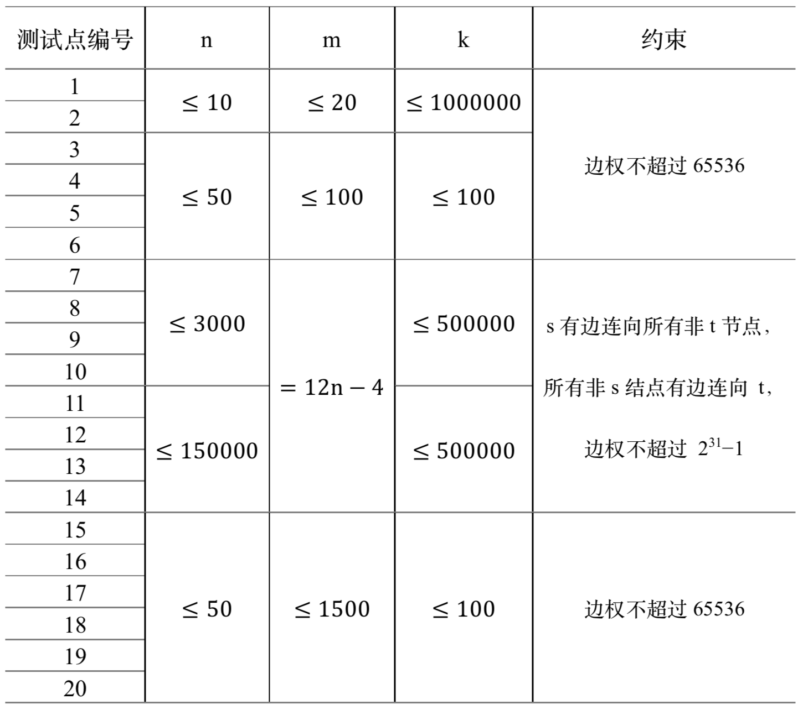

给出一个有向带权网络 $G=(V,E)$，权值函数 $w:E→Z^∗$（即任意边 $e$ 的权值 $w(e)$ 均为正整数），和点 $s,t \in E$，使得在 $G′=(V,E−S)$ 上不存在 $s$ 到 $t$ 的路径。
设 $\mathfrak{S}$ 是所有满足条件的边集 $S$ 的全集，按 $w(S)$ 从小到大输出 $\mathfrak{S}$ 中前 $k$ 小的边集的边权和。其中 $w(S)=\sum_{e\in S}w(e)$。
第一行包含 5 个正整数 $n,m,s,t,k$，其中 $s,t,k$ 意义如上，$n,m$ 分别表示 $|V|,|E|$（即点数和边数）。规定图中的节点用 $1$ 到 $n$ 的整数表示。保证 $s \ne t$。
接下来 $m$ 行，每行 3 个整数 $x,y,z$，表示一条边权为 $z$ 的从 $x$ 到 $y$ 的边。可能有重边但保证没有自环。
如果 $|\mathfrak{S}|<k$，先输出 $|\mathfrak{S}|$ 行，每行包含一个整数，表示前 $|\mathfrak{S}|$ 个 $w(S)$；再输出一行一个整数 $−1$。
如果 $|\mathfrak{S}| \ge k$，则输出 $k$ 行，表示前 $k$ 个 $w(S)$。
两种情况均需按照 $w(S)$ 从小到大输出。
3 3 1 3 100 1 2 3 2 3 4 1 3 5
8 9 12 -1
5 8 1 5 10 1 2 45176 1 3 41088 1 4 32001 2 5 48931 3 5 39291 4 5 28970 2 3 48131 4 2 49795
116468 117192 118265 120223 145438 147235 149193 157556 158280 161311

 Comet OJ
Comet OJ